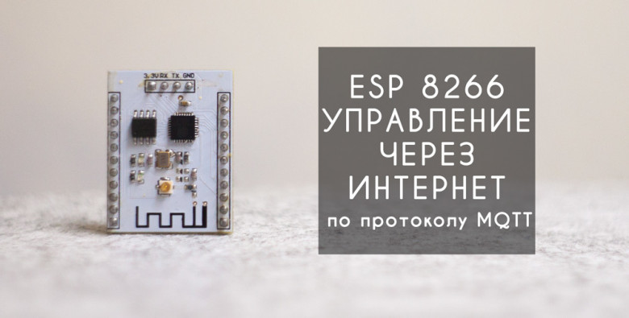
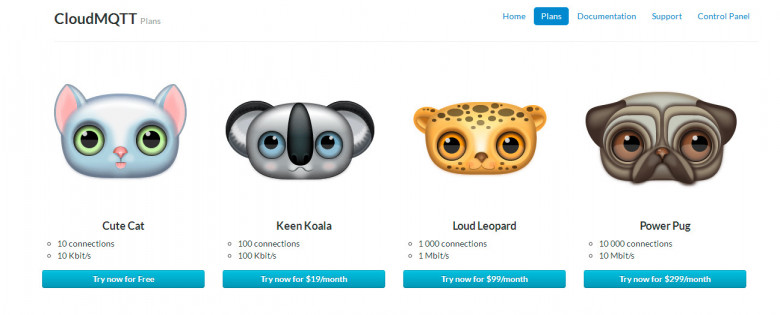
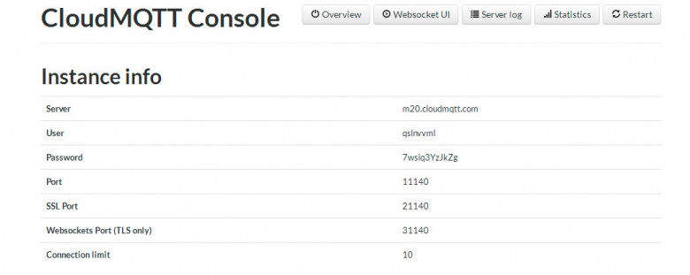

ivizil25 апр 2016 в 11:00
Esp8266 управление через интернет по протоколу MQTT

Всем привет! В этой статье будет подробно рассказано и показано как буквально за 20 минут свободного времени настроить дистанционное управление модулем esp8266 с помощью приложения на Android по протоколу MQTT.
Идея дистанционного управления и мониторинга всегда будоражила умы увлеченных в электронике и программировании людей. Ведь возможность в любой момент времени получить или отправить нужные данные, не зависимо от своего местоположения, дает широкие возможности. В своих прошлых статьях ( Статья 1 и Статья 2) я пытался рассмотреть несколько доступных и относительно простых вариантах реализации дистанционного управления микроконтроллерами через интернет. Однако время и весь мир не стоит на месте – прогресс продолжает свое неумолимое движение вперед. За это небольшое время приобрел широкую популярность модуль esp8266 который благодаря низкой цене и встроенному wi-fi стал одним из основных составляющих «Умного дома».
На данный момент MQTT является передовым и наиболее популярным протоколом передачи данных между отдельными устройствами в рамках систем «Умного дома». Он обладает рядом преимуществ по отношению к другим протоколам:
— низкое потребление трафика;
— соединение между клиентом и сервером всегда открыто;
— не нагружает интернет канал;
— отсутствие задержек в передаче данных;
— удобная система подписок на топики;
Всё это дает возможность мониторинга и управления в режиме реального времени. Однако MQTT требует наличие своего собственного сервера, который выполняет роль посредника между клиентами сети. Тут есть два выхода либо создавать свой сервер либо использовать сторонние сервисы.
Описываемая система управления состоит из двух основных частей: сервера MQTT (он как правило один) и клиентов, которых может быть довольно много. В нашем случае в качестве клиентов будут выступать приложение на Android и сам модуль esp8266.
Алгоритм работы системы следующий. Клиенты подключаются к серверу и сразу после подключения каждый из них осуществляет подписку на и интересующие его топики. Всё общение между клиентами проходит транзитом через сервер, который перенаправляет данные другим клиентам с учетом их подписок.
MQTT сервер.
В нашем случае мы будем использовать крайне удобный сервис www.cloudmqtt.com у которого есть бесплатный тарифный план (Cute Cat), который полностью покроет потребности для реализации небольшой собственной системы «умного дома».

Пройдём регистрацию на сайте и получаем необходимые данные для доступа к серверу. При настройке клиентов необходимо использовать обычный Порт ( без SSL и TLS).

Приложение на Android.
Наше приложение будет выступать в качестве пульта управления для микроконтроллера, а так же будет принимать и отображать всю получаемую информацию от esp8266.
Приложение называется IoT MQTT Dashboard и представляет собой готовый mqtt клиент с небольшим количеством очень удобных виджетов. Более подробно о работе с приложением можно посмотреть на видео.
Esp8266.
Модуль прошивается в среде программирования Arduino, однако хочу заметить что у модуля проблемы с прошивкой в последних версиях Arduino, поэтому рекомендую использовать версию 1.6.4.
Для примера к esp8266 подключены светодиод (5 пин) и датчик температуры ds18b20 (2 пин).
Так как для управления светодиода необходимо получать данные, то esp после подключения должно оформить подписку на соответствующий топик «test/led» иначе все отправленные данные пройдут мимо нашего микроконтроллера.
Для отправки данных температуры подписка не нужно, но при передаче значений температуры необходимо указывать топик в который эти данные пойдут.
Ниже приведен скетч с подробными комментариями.
Скетч Esp8266_mqtt.ino
В результате мы получаем удобный инструмент для дистанционного управления и мониторинга данных, который довольно прост в освоении и будет по силу даже начинающим.
Видео с демонстрацией работы системы управления
Подробная видеоинструкция по настройке системы
Один из вариантов применения управления esp8266 через MQTT протокол
Управление светодиодной лентой через интернет
Если у вас возникли вопросы по данному материалу, то рекомендую посмотреть вторую часть видео, где материал изложен более наглядно.
В архиве находятся скетч и все необходимые библиотеки для прошивки микроконтроллера скетчем из примера.
Обращаю ваше внимание, что библиотека ESP8266WiFi.h не входит в данный архив, она устанавливается через Boards manager в среде Arduino.
АРХИВ
MQTT сервер — www.cloudmqtt.com
Ссылка на приложение IoT MQTT Dashboard — play.google.com/store/apps/details?id=com.thn.iotmqttdashboard&hl=ru
Всем спасибо за внимание.
Теги:
Хабы: